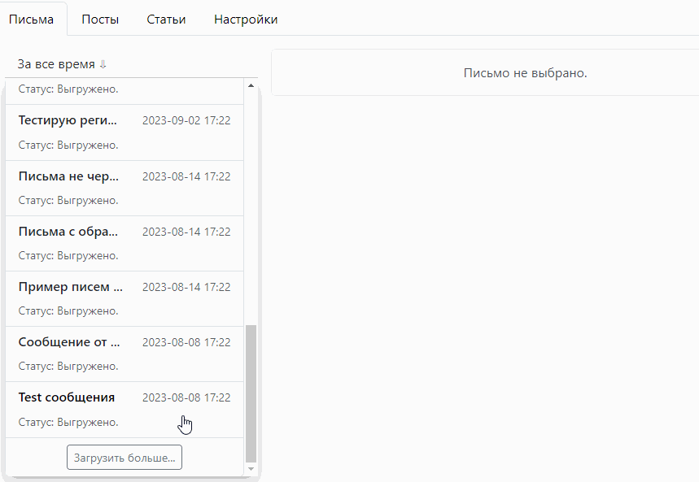
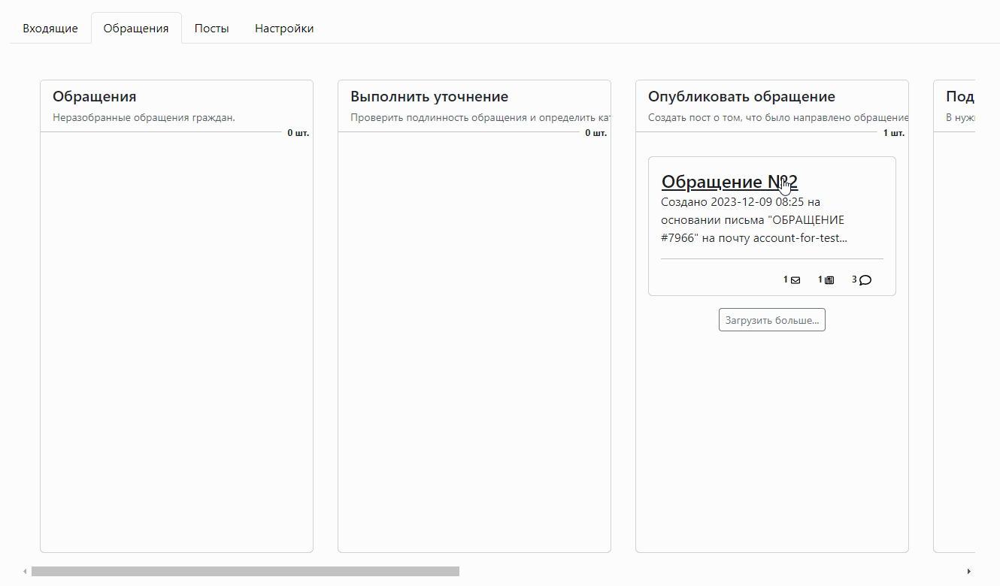
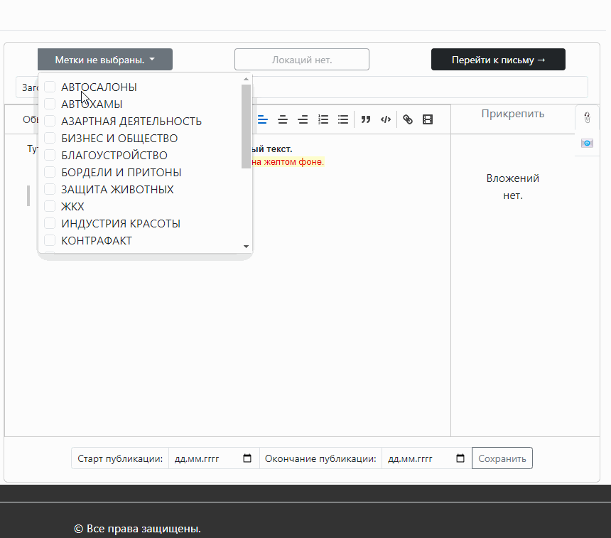
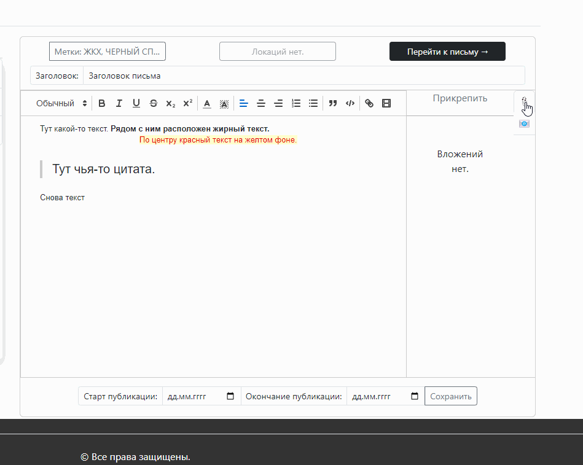

Отслеживание и извлечение почтовых сообщений
Приложение позволяет работать с почтовыми ящиками через протокол IMAP.
Количество почтовых ящиков (пока что) не ограничено. Можно подключать сразу несколько почтовых ящиков.
Все сообщения отправленные на почту в раздел Входищие (INBOX)
будут зарегистрированы приложением и сохранены в БД.

Порядок действий на видео:
- заходим в почту, создаем новое письма и вводим текст;
- отправляем письмо;
- проверяем отобразилось ли письмо в программе (в левой навигационной панели);
- для просмотра щелкаем по карточке письма и его содержимое будет отображено в правой-рабочей области.
Извлечение файлов из почтовых сообщений
Если к письму будут прикреплены файлы, то они будут выгружены и сохранены в указанной при настройке приложения папке.
Сейчас поддерживается работа с файлами mp4, jpg, png и pdf.
Другие форматы файлов игнорируются.

Порядок действий на видео:
- заходим в почту, создаем новое письма и прикрепляем файл;
- отправляем письмо;
- проверяем отобразилось ли письмо в программе (в левой навигационной панели);
- для просмотра щелкаем по карточке письма и его содержимое будет отображено в правой-рабочей области;
- под областью с текстом находится горизонтальный контейнер в котором содержатся файлы из письма;
- при щелчке ЛКМ по иконке файла будет открыто модальное окно с демонстрацией содержимого файла.
Извлечение геолокации из писем
Имеется два встроенных механизма фиксации геолокации:
- Если геолокация (широта и долгота) указана в тексте письма.
- Если геолокация записана в файле (например в файле фотографии).
После извлечения координат из письма они записываются в БД. Также, выполняется попытка определения названия города, района, улицы, дома. Благодаря сохранению геолокации можно выполнять поиск писем по названию города, района, улицы, дома.
Координаты в тексте

Порядок действий на видео:
- заходим в почту, создаем новое письмо в тексте которого указываем кооржинаты;
- отправляем письмо;
- проверяем отобразилось ли письмо в программе (в левой навигационной панели);
- для просмотра щелкаем по карточке письма и его содержимое будет отображено в правой-рабочей области;
- над областью с текстом по центру находится выпадающий список с перечнем зарегистрированных локаций;
- при щелчке ЛКМ по элементу из списка будет открыто новое окно с картой.
Координаты в фотографии

Порядок действий на видео:
- заходим в почту, создаем новое письмо и прикрепляем файл в котором хранится информация о координатах;
- отправляем письмо;
- проверяем отобразилось ли письмо в программе (в левой навигационной панели);
- для просмотра щелкаем по карточке письма и его содержимое будет отображено в правой-рабочей области;
- над областью с текстом по центру находится выпадающий список с перечнем зарегистрированных локаций;
- при щелчке ЛКМ по элементу из списка будет открыто новое окно с картой.
Фильтрация/Поиск писем
Все письма располагаются списком в левой части. По умолчанию список содержит 25 последних писем удовлетворяющих условиям фильтра/поиска. В конце списка располагается кнопка "Больше писем", которая проверит есть ли еще письма в БД и добавит их в конец списка.
Доступна фильтрация по дате создания письма:
- за все время;
- за сегодня;
- за вчера;
- за неделю;
- за месяц.
Поиск работает по теме письма или по локации письма. Можно указать город (улицу, район) и если у письма есть геометка с этим городом, то оно покажется в списке.

Метки к письму
К каждому письму можно назначить несколько меток.
Порядок действий на видео:
- над областью с текстом письма слева находится выпадающий список с перечнем доступных меток для письма;
- при выборе или отмены выбора изменения автоматически сохранятся в БД.
Создание поста из письма
Быстрый переход от письма к посту и обратно
Если пост был создан из письма, то между ними образуется связь, позволяющая выполнять быстрый переход от письма с обращением к посту на эту тему.
Одно письмо может ссылаться только на один пост. Один пост может ссылаться сразу на несколько писем. Если письмо одно, то отображается кнопка (как на видео), если писем несколько, то кнопка меняется на выпадающий список.

Порядок действий на видео:
- над областью с текстом письма справа находится кнопка которая, перенаправляет к посту;
- в окне с постом в том же месте располагается кнопка возврата к письму.
Фильтрация/Поиск постов
Поиск постов в левой панели работает аналогично поиску писем. Если пост был создан от письма у которого присутствовали геометки, то при выполнении поиска по постам, можно также искать по названию городов и улиц.
Метки к посту
Аналогично как с письмами, для постов можно назначать метки. Стоит отметить, что метки писем и метки постов - это разные метки.

Порядок действий на видео:
- над областью с текстом письма слева находится выпадающий список с перечнем доступных меток для поста;
- при выборе или отмены выбора изменения автоматически сохранятся в БД.
Редактор: добавить видео из вложения
Редактор постов позволяет добавлять видео ролики и картинки к тексту.
Справа от области редактирования текста располагается блок с вложениями. Вложения делятся на два вида:
- вложения поста;
- вложения писем от которых был создан пост.
Для добавления видео в текст необходимо зажать ЛКМ над изображением файла и перетянуть его в область редактирования текста, не отпуская ЛКМ до момента попадания курсора в область редактирования текста.
